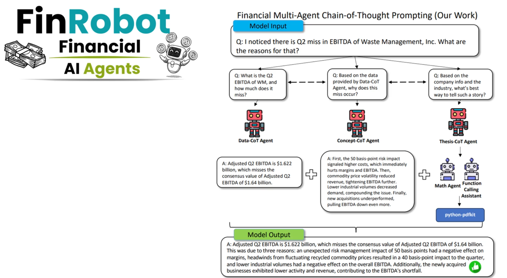
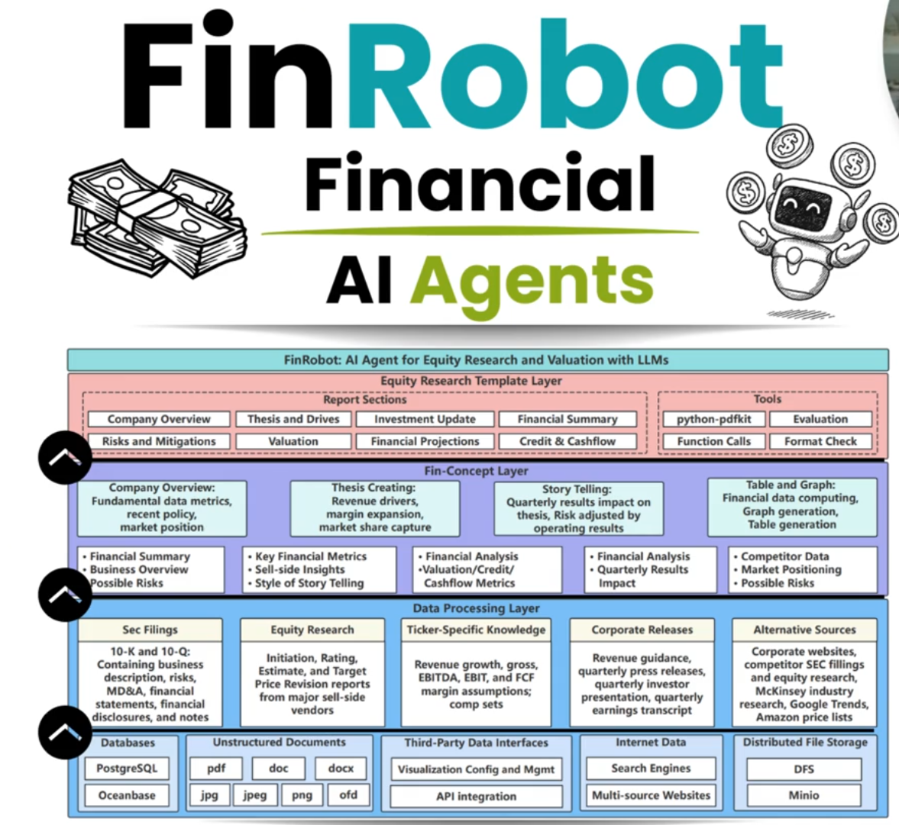

Equity research where every number is traced to a source
Give FinRobot a ticker. It reads SEC filings, answers analyst questions like “why did EBITDA move?” with cited, verified figures, and writes an 8-section research PDF with tables, charts and a DCF.
The use case: from filings to a defensible answer
An analyst notices a miss in a quarterly result and needs to know why, fast, and needs to be able to defend every figure in the answer. This is the example FinRobot is built around.
Who it is for
People who need LLM speed on financial documents without LLM-style confident errors.
Equity & credit analysts
Ask why a metric moved and get cited figures, comparisons against consensus (when on file) and drivers from the filings.
Research teams
Generate a first-draft, 8-section equity research PDF with a DCF, charts and a verification appendix, then edit the assumptions and re-run.
AI / platform engineers
A reference build of verification-first agents on LangGraph and LangChain, with Langfuse and LangSmith observability, ADRs and a runbook.
How it works
The model reads and writes. Code does arithmetic, chooses periods, and checks every number.
- IngestSEC EDGAR 10-K, 10-Q and earnings releases plus XBRL financials, stored in Postgres with pgvector.
- RouteCode parses the ticker and fiscal period from the question and splits it into sub-questions.
- Draft with toolsEach agent runs a tool loop; figures come only from registered facts and metric tools.
- Verify → retry → sanitizeA deterministic evaluator checks each number and period label. One repair attempt, then unverifiable lines are deleted.
- ReportFor reports, a human can review valuation assumptions before the tables, charts, DCF and PDF are produced.

The layered design
Source data at the bottom, financial concepts in the middle, the research report template on top.

Why you can trust the output
LLMs state wrong numbers fluently. FinRobot is built to fail closed.
| Guard | What it prevents |
|---|---|
| Every number is registered under an id and must be cited | Uncited figures |
| Code does all arithmetic; units are inferred, not chosen by the model | Mislabelled units, hand-typed numbers |
| Facts carry a period basis; invalid period mixes are rejected | 11.0x leverage instead of 2.93x |
| Fiscal period parsed in code, not by the model | An invented “FY2024” |
| Deterministic evaluator + one retry + removal of the unverifiable | Confident wrong answers |
| Grounding check on qualitative claims; escaped model text; PDF renderer cannot fetch URLs | Unsupported claims, injected markup, SSRF |
Built with
LangGraph
Question and report workflows, durable state and human review.
LangChain
One gateway for chat and embedding models, chosen per role.
Langfuse & LangSmith
Traces, per-run quality scores and golden-set experiments.
Postgres + pgvector
Facts, filing chunks, run records and graph checkpoints.
Ollama (local-first)
Runs on one 16 GB GPU; hosted models are a one-line config change.
FastAPI & Streamlit
An API with auth and metrics, plus a UI and a CLI.
Try it
Docker is the quickest route. Full steps, including local development and models, are in the README and the deployment runbook.
cp .env.example .env # set SEC_USER_AGENT and replace every change-me-* secret
docker compose up -d --build
docker compose exec api finrobot ingest WM
docker compose exec api finrobot ask "How did WM EBITDA change in Q3 versus a year ago, and what drove it?"Not financial advice. FinRobot produces research aids from public filings under stated assumptions. It makes no recommendation to buy or sell any security. Only US SEC registrants are supported.